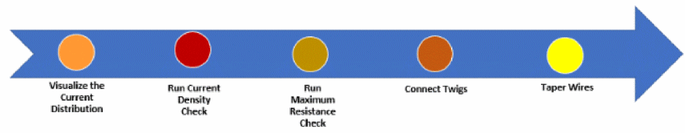

2
Performing Interactive SDR Checks
During interactive routing, you use SDR for two modes of routing checks, one based on the current density and the other on the maximum resistance. The following diagram depicts the steps for interactive SDR checks to avoid EM and maxResistance violations in the design while performing Simulation Driven Interactive Routing:

-
Visualize the Current Distribution.
Identifies the net connections that either consume or generate the most current.
For more information, see Visualizing the Current Distribution Per Net. -
Run the Current Density Check.
Estimates the current in the edited wire and lets you create a design with the appropriate width of the wire based on the estimated EM value.
For more information, see Running Interactive SDR Current Density Checks. -
Run the Maximum Resistance Check.
Connects the pins interactively and automatically estimate the final resistance between the two pins.
For more information, see Running an Interactive SDR Maximum Resistance Check. -
Connect Twigs.
Connects multiple pins automatically with the appropriate wires and vias.
For more information, Connecting Twigs Automatically. -
Taper Wires.
Adjusts the width of each segment independently.
For more information, see Tapering in SDR.
Return to top